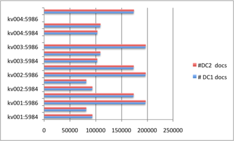
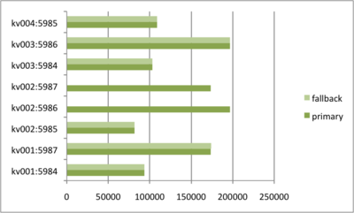
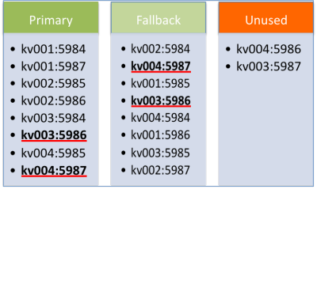
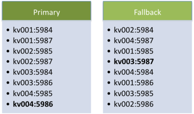
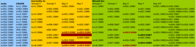

For a long set of reasons that I must sometime write about, I have a set of CouchDB databases which replicate with
each other. Each database replicates with two others: one in the same datacentre, one in the other datacentre (we’re
only running with two datacentres at the moment). One is to do with resiliance the other with response capability.
Anyway - having two or more replications is not a problem with CouchDB (if you’re careful) - even with our version 0.9x.
Lacking symmetry
However - we may not have been as careful as we’d have wished: look at these numbers:

Here we see that the replication maps have datacentre symmetry - the data in each node in the two data centres are the
same. Apart from the very slight increase in DC2’s data - because I took those numbers about 5 min after the first DC.
This set of data (one of 15 which we have today) is growing at 0.3% per 5 min.
However - some nodes have 200,000 docs - others none at all - something is amiss.
The datacentres give us the capacity to handle requests in our platform, but we also have replications within each
datacentre for resilience. Each node should be either a primary or a fallback node, and we should have resilience
symmetry - but look at what we actually have when we align the primary and fallbacks:

Ouch - this does not look symmetrical at all!
Here’s where the problem lies - a bug in the config:

Here we can see a few problems:
- two of our nodes appear as both Primary and as Fallback nodes
- two of our nodes are unused
Fixing these problems
The first thing to do is not to correct the bug in the config - it’s to write tests that can spot this happening. This
way we can help ensure that someone coming behind us does not end up in the same situation again. We can even write
these as runtime tests - not just unit tests - so that in the future if we have dynamic config reloading we can test
it’ll be A-OK.
Second will then be to actually fix the config - quite easy in this case - and get it rolled out to production. This
will then fill the unused nodes with the appropriate data.
Third will be to reshard everything - which has (in our system) the side-effect of deleting data from places that it
ought not be. However - we do need to be careful that we do not have unexpected side effects.
The two nodes that appear as both primary and fallback (kv003:5986 and kv004:5987) have too much data as they get
their “own” data and they were incorrectly replicated into too. Here’s how the other two nodes got out of hand.
Data is correctly added to the primary node kv001:5987.
Replication sent a copy from kv001:5987 to kv004:5987.
Unsymmetric replication sent a copy from kv004:5987 to kv002:5987
Hence kv002:5987 has too much data. Here is the same story for kv001:5986.
Data is correctly added to the primary node kv002:5986.
Replication sent a copy from kv002:5986 to kv003:5986.
Unsymmetric replication sent a copy from kv003:5986 to kv001:5986.
When we reshard, we will unexpectedly find data on kv003:5986 and kv004:5987 - and they’ll be deleted (on the code
that we have). CouchDB replication will also delete the data from those nodes’ replication pair - so we’ll end up
with appropriately populated databases.
To ease the problems of the time it takes to reshard, you might be tempted to simply look at the data found on
kv003:5986 and kv004:5987 (one quarter of the full set) and reshard those - and you’d be correct. In the fix - in
order to balance the load across the nodes - kv002:5986 will be demoted to be a fallback and kv004:5986 will be
promoted to be a full primary node as shown here:

However - there’s more.
DNS, VIPs and things that can go wrong
Alas, if the above really was the source of the problem we wouldn't have fallen into it. You see, for the resilience
to work we need the primary and fallback nodes to “flip” automatically - for this we have some carp magic doing its
work. Of course, for that to be picked up by the Tomcat layer above, DNS CNAMES must be used.
This table is horrible - so sorry - but it shows what is there now and by assuming that we need to keep everything
symmetrical - an excellent assumption - we can spot what needs to change. It essentially shows how to fix the problem.

In the yellow box we see the nodes that are both primary and fallback and the nodes that are unused. The fix - in the
green - shows the newly bolded fallback changes that most simply fix the problem. It was important that we were able
to “simply” find the fix by only changing the fallback nodes - we avoid a potentially long-running and danger-fraught
resharding of lots more data.